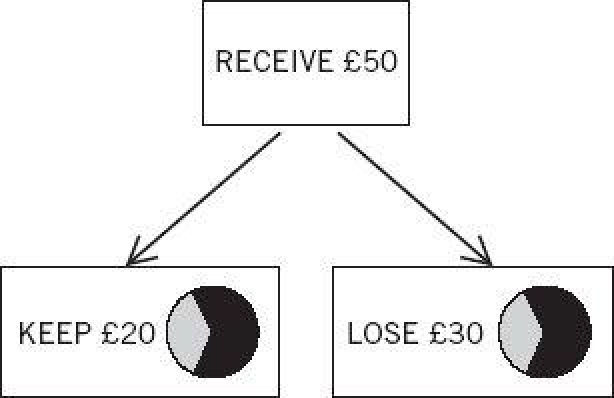

Italy and France competed in the 2006 final of the World Cup. The next two sentences both describe the outcome: “Italy won.” “France lost.” Do those statements have the same meaning? The answer depends entirely on what you mean by meaning.
For the purpose of logical reasoning, the two descriptions of the outcome of the match are interchangeable because they designate the same state of the world. As philosophers say, their truth conditions are identical: if one of these sentences is true, then the other is true as well. This is how Econs understand things. Their beliefs and preferences are reality-bound. In particular, the objects of their choices are states of the world, which are not affected by the words chosen to describe them.
There is another sense of meaning, in which “Italy won” and “France lost” do not have the same meaning at all. In this sense, the meaning of a sentence is what happens in your associative machinery while you understand it. The two sentences evoke markedly different associations. “Italy won” evokes thoughts of the Italian team and what it did to win. “France lost” evokes thoughts of the French team and what it did that caused it to lose, including the memorable head butt of an Italian player by the French star Zidane. In terms of the associations they bring to mind—how System 1 reacts to them—the two sentences really “mean” different things. The fact that logically equivalent statements evoke different reactions makes it impossible for Humans to be as reliably rational as Econs.
Emotional Framing
Amos and I applied the label of framing effects to the unjustified influences of formulation on beliefs an Con d preferences. This is one of the examples we used:
Would you accept a gamble that offers a 10% chance to win $95 and a 90% chance to lose $5?
Would you pay $5 to participate in a lottery that offers a 10% chance to win $100 and a 90% chance to win nothing?
First, take a moment to convince yourself that the two problems are identical. In both of them you must decide whether to accept an uncertain prospect that will leave you either richer by $95 or poorer by $5. Someone whose preferences are reality-bound would give the same answer to both questions, but such individuals are rare. In fact, one version attracts many more positive answers: the second. A bad outcome is much more acceptable if it is framed as the cost of a lottery ticket that did not win than if it is simply described as losing a gamble. We should not be surprised: losses evokes stronger negative feelings than costs. Choices are not reality-bound because System 1 is not reality-bound.
The problem we constructed was influenced by what we had learned from Richard Thaler, who told us that when he was a graduate student he had pinned on his board a card that said costs are not losses. In his early essay on consumer behavior, Thaler described the debate about whether gas stations would be allowed to charge different prices for purchases paid with cash or on credit. The credit-card lobby pushed hard to make differential pricing illegal, but it had a fallback position: the difference, if allowed, would be labeled a cash discount, not a credit surcharge. Their psychology was sound: people will more readily forgo a discount than pay a surcharge. The two may be economically equivalent, but they are not emotionally equivalent.
In an elegant experiment, a team of neuroscientists at University College London combined a study of framing effects with recordings of activity in different areas of the brain. In order to provide reliable measures of the brain response, the experiment consisted of many trials. Figure 14 illustrates the two stages of one of these trials.
First, the subject is asked to imagine that she received an amount of money, in this example £50.
The subject is then asked to choose between a sure outcome and a gamble on a wheel of chance. If the wheel stops on white she “receives” the entire amount; if it stops on black she gets nothing. The sure outcome is simply the expected value of the gamble, in this case a gain of £20.

Figure 14
As shown, the same sure outcome can be framed in two different ways: as KEEP £20 or as LOSE £30. The objective outcomes are precisely identical in the two frames, and a reality-bound Econ would respond to both in the same way—selecting either the sure thing or the gamble regardless of the frame—but we already know that the Human mind is not bound to reality. Tendencies to approach or avoid are evoked by the words, and we expect System 1 to be biased in favor of the sure option when it is designated as KEEP and against that same option when it is designated as LOSE.
The experiment consisted of many trials, and each participant encountere Bon p>
The activity of the brain was recorded as the subjects made each decision. Later, the trials were separated into two categories:
1 Trials on which the subject’s choice conformed to the frame
preferred the sure thing in the KEEP version
preferred the gamble in the LOSS version
2 Trials in which the choice did not conform to the frame.
The remarkable results illustrate the potential of the new discipline of neuroeconomics—the study of what a person’s brain does while he makes decisions. Neuroscientists have run thousands of such experiments, and they have learned to expect particular regions of the brain to “light up”—indicating increased flow of oxygen, which suggests heightened neural activity—depending on the nature of the task. Different regions are active when the individual attends to a visual object, imagines kicking a ball, recognizes a face, or thinks of a house. Other regions light up when the individual is emotionally aroused, is in conflict, or concentrates on solving a problem. Although neuroscientists carefully avoid the language of “this part of the brain does such and such…,” they have learned a great deal about the “personalities” of different brain regions, and the contribution of analyses of brain activity to psychological interpretation has greatly improved. The framing study yielded three main findings:
By joining observations of actual choices with a mapping of neural activity, this study provides a good illustration of how the emotion evoked by a word can “leak” into the final choice.
An experiment that Amos carried out with colleagues at Harvard Medical School is the classic example of emotional framing. Physician participants were given statistics about the outcomes of two treatments for lung cancer: surgery and radiation. The five-year survival rates clearly favor surgery, but in the short term surgery is riskier than radiation. Half the participants read statistics about survival rates, the others received the same information in terms of mortality rates. The two descriptions of the short-term outcomes of surgery were:
The one-month survival rate is 90%.
There is 10% mortality in the first month.
You already know the results: surgery was much more popular in the former frame (84% of physicians chose it) than in the latter (where 50% favored radiation). The logical equivalence of the two descriptions is transparent, and a reality-bound decision maker would make the same choice regardless of which version she saw. But System 1, as we have gotten to know it, is rarely indifferent to emotional words: mortality is bad, survival is good, and 90% survival sounds encouraging whereas 10% mortality is frightening. An important finding of the study is that physicians were just as susceptible to the framing effect as medically unsophisticated people (hospital patients and graduate students in a business school). Medical training is, evidently, no defense against the power of framing.
The KEEP–LOSE study and the survival–mortality experiment differed in one important respect. The participants in the brain-imaging study had many trials in which they encountered the different frames. They had an opportunity to recognize the distracting effects of the frames and to simplify their task by adopting a common frame, perhaps by translating the LOSE amount into its KEEP equivalent. It would take an intelligent person (and an alert System 2) to learn to do this, and the few participants who managed the feat were probably among the “rational” agents that the experimenters identified. In contrast, the physicians who read the statistics about the two therapies in the survival frame had no reason to suspect that they would have made a different choice if they had heard the same statistics framed in terms of mortality. Reframing is effortful and System 2 is normally lazy. Unless there is an obvious reason to do otherwise, most of us passively accept decision problems as they are framed and therefore rarely have an opportunity to discover the extent to which our preferences are frame-bound rather than reality-bound.
Empty Intuitions
Amos and I introduced our discussion of framing by an example that has become known as the “Asian disease problem”:
Imagine that the United States is preparing for the outbreak of an unusual Asian disease, which is expected to kill 600 people. Two alternative programs to combat the disease have been proposed. Assume that the exact scientific estimates of the consequences of the programs are as follows:
If program A is adopted, 200 people will be saved.
If program B is adopted, there is a one-third probability that 600 people will be saved and a two-thirds probability that no people will be saved.
A substantial majority of respondents choose program A: they prefer the certain option over the gamble.
The outcomes of the programs are framed differently in a second version:
If program A' is adopted, 400 people will die.
If program B' is adopted, there is a one-third probability that nobody will die and a two-thirds probability that 600 people will die.
Look closely and compare the two versions: the consequences of programs A and A' are identical; so are the consequences of programs B and B'. In the second frame, however, a large majority of people choose the gamble.
The different choices in the two frames fit prospect theory, in which choices between gambles and sure things are resolved differently, depending on whether the outcomes are good or bad. Decision makers tend to prefer the sure thing over the gamble (they are risk averse) when the outcomes are good. They tend to reject the sure thing and accept the gamble (they are risk seeking) when both outcomes are negative. These conclusions were well established for choices about gambles and sure things in the domain of money. The disease problem shows that the same rule applies when the outcomes are measured in lives saved or lost. In this context, as well, the framing experiment reveals that risk-averse and risk-seeking preferences are not reality-bound. Preferences between the same objective outcomes reverse with different formulations.
An experience that Amos shared with me adds a grim note to the story. Amos was invited to give a speech to a group of public-health professionals—the people who make decisions about vaccines and other programs. He took the opportunity to present them with the Asian disease problem: half saw the “lives-saved” version, the others answered the “lives-lost” question. Like other people, these professionals were susceptible to the framing effects. It is somewhat worrying that the officials who make decisions that affect everyone’s health can be swayed by such a superficial manipulation—but we must get used to the idea that even important decisions are influenced, if not governed, by System 1.
Even more troubling is what happens when people are confronted with their inconsistency: “You chose to save 200 lives for sure in one formulation and you chose to gamble rather than accept 400 deaths in the other. Now that you know these choices were inconsistent, how do you decide?” The answer is usually embarrassed silence. The intuitions that determined the original choice came from System 1 and had no more moral basis than did the preference for keeping £20 or the aversion to losing £30. Saving lives with certainty is good, deaths are bad. Most people find that their System 2 has no moral intuitions of its own to answer the question.
I am grateful to the great economist Thomas Schelling for my favorite example of a framing effect, which he described in his book Choice and Consequence. Schelling’s book was written before our work on framing was published, and framing was not his main concern. He reported on his experience teaching a class at the Kennedy School at Harvard, in which Bon he linthe topic was child exemptions in the tax code. Schelling told his students that a standard exemption is allowed for each child, and that the amount of the exemption is independent of the taxpayer’s income. He asked their opinion of the following proposition:
Should the child exemption be larger for the rich than for the poor?
Your own intuitions are very likely the same as those of Schelling’s students: they found the idea of favoring the rich by a larger exemption completely unacceptable.
Schelling then pointed out that the tax law is arbitrary. It assumes a childless family as the default case and reduces the tax by the amount of the exemption for each child. The tax law could of course be rewritten with another default case: a family with two children. In this formulation, families with fewer than the default number of children would pay a surcharge. Schelling now asked his students to report their view of another proposition:
Should the childless poor pay as large a surcharge as the childless rich?
Here again you probably agree with the students’ reaction to this idea, which they rejected with as much vehemence as the first. But Schelling showed his class that they could not logically reject both proposals. Set the two formulations next to each other. The difference between the tax due by a childless family and by a family with two children is described as a reduction of tax in the first version and as an increase in the second. If in the first version you want the poor to receive the same (or greater) benefit as the rich for having children, then you must want the poor to pay at least the same penalty as the rich for being childless.
We can recognize System 1 at work. It delivers an immediate response to any question about rich and poor: when in doubt, favor the poor. The surprising aspect of Schelling’s problem is that this apparently simple moral rule does not work reliably. It generates contradictory answers to the same problem, depending on how that problem is framed. And of course you already know the question that comes next. Now that you have seen that your reactions to the problem are influenced by the frame, what is your answer to the question: How should the tax code treat the children of the rich and the poor?
Here again, you will probably find yourself dumbfounded. You have moral intuitions about differences between the rich and the poor, but these intuitions depend on an arbitrary reference point, and they are not about the real problem. This problem—the question about actual states of the world—is how much tax individual families should pay, how to fill the cells in the matrix of the tax code. You have no compelling moral intuitions to guide you in solving that problem. Your moral feelings are attached to frames, to descriptions of reality rather than to reality itself. The message about the nature of framing is stark: framing should not be viewed as an intervention that masks or distorts an underlying preference. At least in this instance—and also in the problems of the Asian disease and of surgery versus radiation for lung cancer—there is no underlying preference that is masked or distorted by the frame. Our preferences are about framed problems, and our moral intuitions are about descriptions, not about substance.
Good Frames
Not all frames are equal, and s Bon nd t="4%" wome frames are clearly better than alternative ways to describe (or to think about) the same thing. Consider the following pair of problems:
A woman has bought two $80 tickets to the theater. When she arrives at the theater, she opens her wallet and discovers that the tickets are missing. Will she buy two more tickets to see the play?
A woman goes to the theater, intending to buy two tickets that cost $80 each. She arrives at the theater, opens her wallet, and discovers to her dismay that the $160 with which she was going to make the purchase is missing. She could use her credit card. Will she buy the tickets?
Respondents who see only one version of this problem reach different conclusions, depending on the frame. Most believe that the woman in the first story will go home without seeing the show if she has lost tickets, and most believe that she will charge tickets for the show if she has lost money.
The explanation should already be familiar—this problem involves mental accounting and the sunk-cost fallacy. The different frames evoke different mental accounts, and the significance of the loss depends on the account to which it is posted. When tickets to a particular show are lost, it is natural to post them to the account associated with that play. The cost appears to have doubled and may now be more than the experience is worth. In contrast, a loss of cash is charged to a “general revenue” account—the theater patron is slightly poorer than she had thought she was, and the question she is likely to ask herself is whether the small reduction in her disposable wealth will change her decision about paying for tickets. Most respondents thought it would not.
The version in which cash was lost leads to more reasonable decisions. It is a better frame because the loss, even if tickets were lost, is “sunk,” and sunk costs should be ignored. History is irrelevant and the only issue that matters is the set of options the theater patron has now, and their likely consequences. Whatever she lost, the relevant fact is that she is less wealthy than she was before she opened her wallet. If the person who lost tickets were to ask for my advice, this is what I would say: “Would you have bought tickets if you had lost the equivalent amount of cash? If yes, go ahead and buy new ones.” Broader frames and inclusive accounts generally lead to more rational decisions.
In the next example, two alternative frames evoke different mathematical intuitions, and one is much superior to the other. In an article titled “The MPG Illusion,” which appeared in Science magazine in 2008, the psychologists Richard Larrick and Jack Soll identified a case in which passive acceptance of a misleading frame has substantial costs and serious policy consequences. Most car buyers list gas mileage as one of the factors that determine their choice; they know that high-mileage cars have lower operating costs. But the frame that has traditionally been used in the United States—miles per gallon—provides very poor guidance to the decisions of both individuals and policy makers. Consider two car owners who seek to reduce their costs:
Adam switches from a gas-guzzler of 12 mpg to a slightly less voracious guzzler that runs at 14 mpg.
The environmentally virtuous Beth switches from a Bon ss es from 30 mpg car to one that runs at 40 mpg.
Suppose both drivers travel equal distances over a year. Who will save more gas by switching? You almost certainly share the widespread intuition that Beth’s action is more significant than Adam’s: she reduced mpg by 10 miles rather than 2, and by a third (from 30 to 40) rather than a sixth (from 12 to 14). Now engage your System 2 and work it out. If the two car owners both drive 10,000 miles, Adam will reduce his consumption from a scandalous 833 gallons to a still shocking 714 gallons, for a saving of 119 gallons. Beth’s use of fuel will drop from 333 gallons to 250, saving only 83 gallons. The mpg frame is wrong, and it should be replaced by the gallons-per-mile frame (or liters-per–100 kilometers, which is used in most other countries). As Larrick and Soll point out, the misleading intuitions fostered by the mpg frame are likely to mislead policy makers as well as car buyers.
Under President Obama, Cass Sunstein served as administrator of the Office of Information and Regulatory Affairs. With Richard Thaler, Sunstein coauthored Nudge, which is the basic manual for applying behavioral economics to policy. It was no accident that the “fuel economy and environment” sticker that will be displayed on every new car starting in 2013 will for the first time in the United States include the gallons-per-mile information. Unfortunately, the correct formulation will be in small print, along with the more familiar mpg information in large print, but the move is in the right direction. The five-year interval between the publication of “The MPG Illusion” and the implementation of a partial correction is probably a speed record for a significant application of psychological science to public policy.
A directive about organ donation in case of accidental death is noted on an individual’s driver license in many countries. The formulation of that directive is another case in which one frame is clearly superior to the other. Few people would argue that the decision of whether or not to donate one’s organs is unimportant, but there is strong evidence that most people make their choice thoughtlessly. The evidence comes from a comparison of the rate of organ donation in European countries, which reveals startling differences between neighboring and culturally similar countries. An article published in 2003 noted that the rate of organ donation was close to 100% in Austria but only 12% in Germany, 86% in Sweden but only 4% in Denmark.
These enormous differences are a framing effect, which is caused by the format of the critical question. The high-donation countries have an opt out form, where individuals who wish not to donate must check an appropriate box. Unless they take this simple action, they are considered willing donors. The low-contribution countries have an opt-in form: you must check a box to become a donor. That is all. The best single predictor of whether or not people will donate their organs is the designation of the default option that will be adopted without having to check a box.
Unlike other framing effects that have been traced to features of System 1, the organ donation effect is best explained by the laziness of System 2. People will check the box if they have already decided what they wish to do. If they are unprepared for the question, they have to make the effort of thinking whether they want to check the box. I imagine an organ donation form in which people are required to solve a mathematical problem in the box that corresponds to their decision. One of the boxes contains the problem 2 + 2 = ? The problem in the other box is 13 × 37 = ? The rate of donations would surely be swayed.
When the role of formulation is acknowledged, a policy question arises: Which formulation should be adopted? In this case, the answer is straightforward. If you believe that a large supply of donated organs is good for society, you will not be neutral between a formulation that yields almost 100% donations and another formulation that elicits donations from 4% of drivers.
As we have seen again and again, an important choice is controlled by an utterly inconsequential feature of the situation. This is embarrassing—it is not how we would wish to make important decisions. Furthermore, it is not how we experience the workings of our mind, but the evidence for these cognitive illusions is undeniable.
Count that as a point against the rational-agent theory. A theory that is worthy of the name asserts that certain events are impossible—they will not happen if the theory is true. When an “impossible” event is observed, the theory is falsified. Theories can survive for a long time after conclusive evidence falsifies them, and the rational-agent model certainly survived the evidence we have seen, and much other evidence as well.
The case of organ donation shows that the debate about human rationality can have a large effect in the real world. A significant difference between believers in the rational-agent model and the skeptics who question it is that the believers simply take it for granted that the formulation of a choice cannot determine preferences on significant problems. They will not even be interested in investigating the problem—and so we are often left with inferior outcomes.
Skeptics about rationality are not surprised. They are trained to be sensitive to the power of inconsequential factors as determinants of preference—my hope is that readers of this book have acquired this sensitivity.
Speaking of Frames and Reality
“They will feel better about what happened if they manage to frame the outcome in terms of how much money they kept rather than how much they lost.”
“Let’s reframe the problem by changing the reference point. Imagine we did not own it; how much would we think it is worth?”
“Charge the loss to your mental account of ‘general revenue’—you will feel better!”
“They ask you to check the box to opt out of their mailing list. Their list would shrink if they asked you to check a box to opt in!”
P